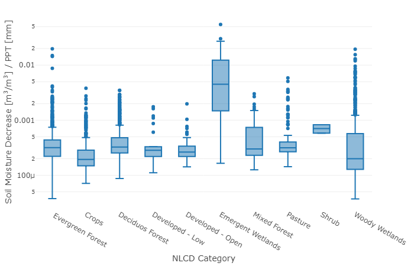

Section 3 Hypothesis
Extreme precipitation events inundate areas with water so quickly that landscapes are unable to drain the excess water. This flash of water inundation leads to the mobilization of contaminants and provides pathways for those contaminants to enter groundwater. For example, 68% of waterborne disease outbreaks in the United States between 1948 and 1998 were immediately preceded by precipitation events above the 80th percentile, with a two-month lag in groundwater (Curriero et al. 2001). I hypothesize that groundwater storage availability is directly related to how landscapes respond to extreme precipitation. For example, if available groundwater storage is low (i.e., if soil is near saturation) prior to an extreme precipitation event, the landscape cannot effectively offset the impacts of an excess amount of water. Conversely, if available groundwater storage is high (i.e., if soil is dry), the landscape can more readily mitigate the impact of an extreme precipitation event.
Geophysical landscape features, temporal variability of SM, and land cover are major drivers of groundwater vulnerability to contamination. Extreme precipitation events, such as tropical cyclones, overwhelm and impose changes to each of these variables in measurable ways. My preliminary analysis suggests that landscapes respond to extreme precipitation differently relative to land cover patterns Figure 3.1 and available groundwater storage leading up to an extreme event. Investigating the relationships and the ways in which to measure these impacts will enable future forecasting of vulnerability and better inform disaster response efforts, directly and positively affecting public health.

Figure 3.1: Drop in soil moisture following Hurricane Florence normalized by amount of precipitation and categorized by National Landcover Dataset classification
References
Curriero, Frank, Jonathan A. Patz, Joan B. Rose, and Subhash Lele. 2001. “The Association Between Extreme Precipitation and Waterborne Disease Outbreaks in the United States.” American Journal of Public Health 91 (8): 1194–9. https://doi.org/10.2105/ajph.91.8.1194.